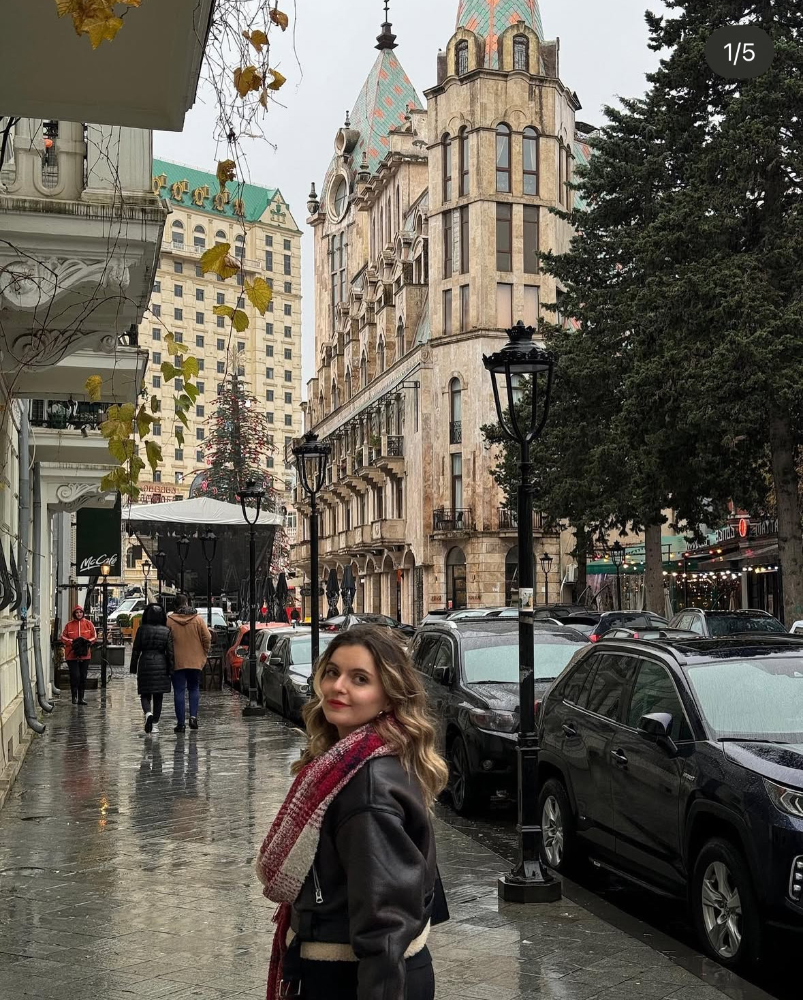

CBS Uzman Yardımcısı
İçişleri Bakanlığı – NVİ GM (Ankara) • 07/2025 – Devam
- Kurumsal CBS süreçleri ve veri yönetimi
- Mekânsal analiz, raporlama ve koordinasyon
Ankara doğumluyum. Lisans eğitimimi Selçuk Üniversitesi Harita Mühendisliği bölümünde tamamladım. 2025 yılında Mersin Üniversitesi Uzaktan Algılama ve Coğrafi Bilgi Sistemleri yüksek lisans programından mezun oldum. Öğrenmeye açık, sorumluluk almaktan çekinmeyen ve sistemli çalışmayı seven biriyim.

Öne çıkan iş deneyimlerim:
İçişleri Bakanlığı – NVİ GM (Ankara) • 07/2025 – Devam
Tapu ve Kadastro GM (İstanbul) • 05/2025 – 07/2025
Kahramanmaraş • 10/2022 – 02/2023
Ankara • 09/2020 – 03/2021
Yüksek lisans tez çalışmamda RUSLE modeli kullanılarak ArcGIS yazılımı ile Mersin ilinde erozyon duyarlılığı analiz edildi ve riskli bölgeler tespit edildi.